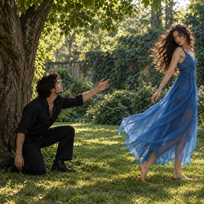

She
La primera vez que la vi... No. No. Si quiero contarte esta historia he de empezar diciéndote las cosas tal y como sucedieron en realidad. Déjame empezar de nuevo.
La primera vez que me dejó que la viera estaba sentada al pie de un árbol, con una libreta de dibujo y un lapicero en su regazo, y pasé a su lado sin verla. Me he preguntado cómo pudo ser así un millón de veces; ¡me he reprochado un millón de veces que así fuese! Todo lo iluminaba su presencia. El Sol, alto y amarillo, desapareció del azul del cielo cuando sus ojos rasgados me miraron. Y para mí ya no hubo nada más que ella.
Aquel día especial yo caminaba con prisas como siempre, de mal humor porque sí, pensando en mil problemas (que ahora me parecen de risa) como siempre, perdiéndome todo lo que aparecía ante mí... Como siempre. Y me llamó por mi nombre. «Ven, siéntate un momentito conmigo», me dijo. Aquel día especial todo cambió para mí.
Me senté a su lado. Cantaba bajito, como si lo hiciese para las flores que estaba dibujando con mucho cuidado en el papel, como si lo hiciese solo para ella. Me dejó que la mirase dibujar, me dejó que la escuchase cantar bajito, me dejó que la viera sonreír a la vida. «Me estás cambiando», le dije. Ella no dijo nada. Solo me miró.
Y en su mirada mi negro corazón pudo ver una gotita de tristeza. Mi corazón, que jamás había sentido nada que no fuese yo mismo, sintió algo diferente por primera vez. La sentía a ella. «¿Por qué sufres?», le pregunté. Sus ojos brillaron como dos estrellas y su sonrisa eterna de primavera se convirtió en una risa de verano. «¡Ay, diablillo —me dijo mirándome fijamente—, la vida es igual para todos! Mírala con una sonrisa y ella te sonreirá.»
De nada sirvieron mis protestas, de nada sirvió que le dijera que yo no sabía sonreír. Se levantó y bailó descalza sobre el césped alrededor del árbol, girando sobre sí misma con la cara hacia el cielo azul. Y así se fue alejando poco a poco de mí.
Yo me quedé allí sentado, viéndola alejarse. «¡Espera, espera, por favor!», grité. «¿Volveré a verte?», supliqué. «¡No sé cómo te llamas!», chillé poniéndome de pie de un salto.
Sus ojos rasgados me miraron una vez más; sus labios me sonrieron una vez más. «Me llamo She.»